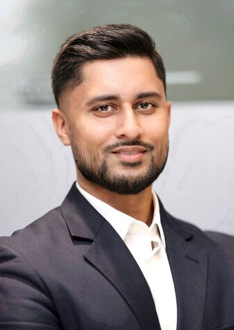
About me
I’m a final year orthopaedic surgery resident in the Department of Surgery at the University of Toronto. I completed medical school at the University of Toronto's Temerty Faculty of Medicine (Ranked 5th Medical School in the World by U. S. News and World Report). I will be pursuing a two-year Sports Medicine & Joint Preservation fellowship at the Hospital for Special Surgery, Weill Cornell Medicine (Ranked #1 in Orthopaedic Surgery by U.S. News and World Report, 17 years in a row) in New York City, USA.
I plan to build a career in academic sports medicine, with a focus on cartilage restoration and data-driven surgical innovation using artificial intelligence. I have contributed to over 33 peer-reviewed research publications, with another 30 studies presently underway. I have also founded and lead COSMEC, Canada's largest orthopaedic education course for medical students, in collaboration with the Division of Orthopaedic Surgery at the University of Toronto, and have been deeply involved in surgical education research.
Outside of medicine, I have been involved in a wide range of humanitarian and health advocacy initiatives, including serving as a board member for Humanity First, heavily involved in the Global Health and Disaster Relief programs, co-founder of the UofT Golden Scalpel basketball tournament, establishing CardiacClinic.ca, co-founder of the 3D PPE initiative, co-chair of the Conference on Health Advocacy Toronto, and a sustained commitment to media relations and freelance journalism.
Education & Training:
I plan to build a career in academic sports medicine, with a focus on cartilage restoration and data-driven surgical innovation using artificial intelligence. I have contributed to over 33 peer-reviewed research publications, with another 30 studies presently underway. I have also founded and lead COSMEC, Canada's largest orthopaedic education course for medical students, in collaboration with the Division of Orthopaedic Surgery at the University of Toronto, and have been deeply involved in surgical education research.
Outside of medicine, I have been involved in a wide range of humanitarian and health advocacy initiatives, including serving as a board member for Humanity First, heavily involved in the Global Health and Disaster Relief programs, co-founder of the UofT Golden Scalpel basketball tournament, establishing CardiacClinic.ca, co-founder of the 3D PPE initiative, co-chair of the Conference on Health Advocacy Toronto, and a sustained commitment to media relations and freelance journalism.
Education & Training:
- Undegraduate: BSc, Faculty of Science, McMaster University (2016)
- Recipient of the prestigious Burke Memorial Ring graduate award for most outstanding contributions to undergraduate activities
- Medical School: MD, Temerty Faculty of Medicine, University of Toronto (2022)
- Recipient of the prestigious Canadian Medical Hall of Fame Award for Medical Students (2020)
- Residency: Toronto Orthopaedics, Department of Surgery, University of Toronto (2027)
- Fellowship: Sports Medicine & Joint Preservation, Hospital for Special Surgery, Weill Cornell Medicine (2027-2029)


 Golden Horseshoe - McMaster, Western and Toronto Sports Medicine Rounds 2026
Golden Horseshoe - McMaster, Western and Toronto Sports Medicine Rounds 2026

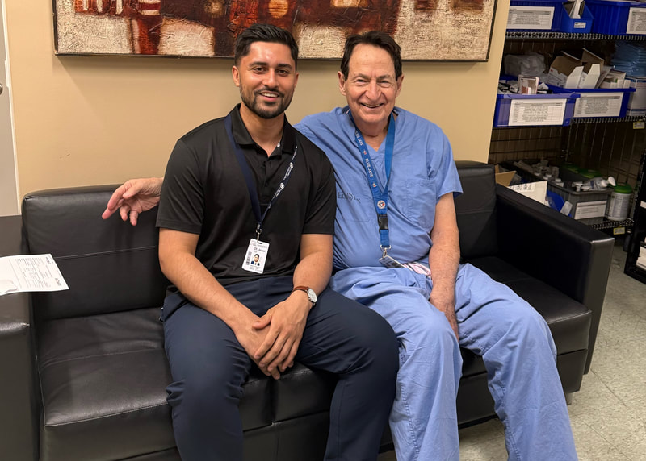
The legendary Dr. Allan Gross, pioneer of fresh osteochondral allograft transplantation.
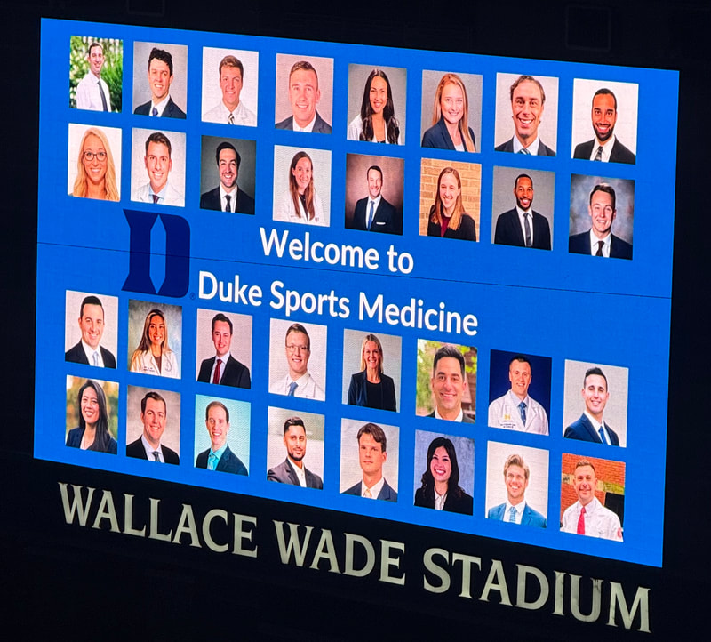
Duke Sports Medicine Interview Tour
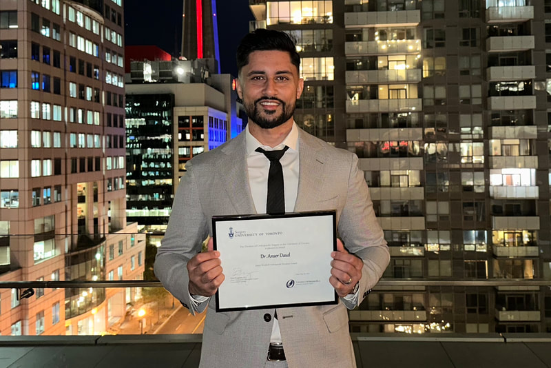
James Waddell award for most outstanding PGY4 resident
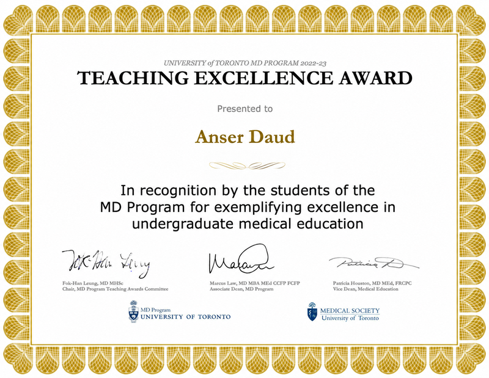
UofT MD Program Teaching Award
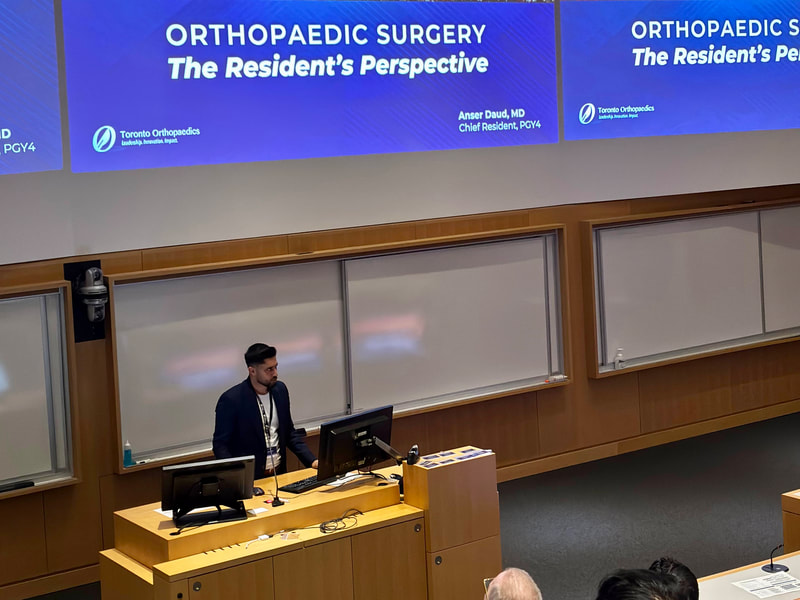
Speaking to medical students and prospective orthopaedic residents as the Executive Chief Resident of Toronto Orthopaedics.
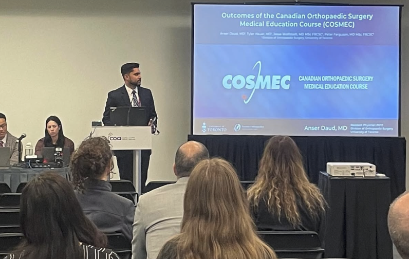
Presenting results of COSMEC at the Canadian Orthopaedic Association meeting
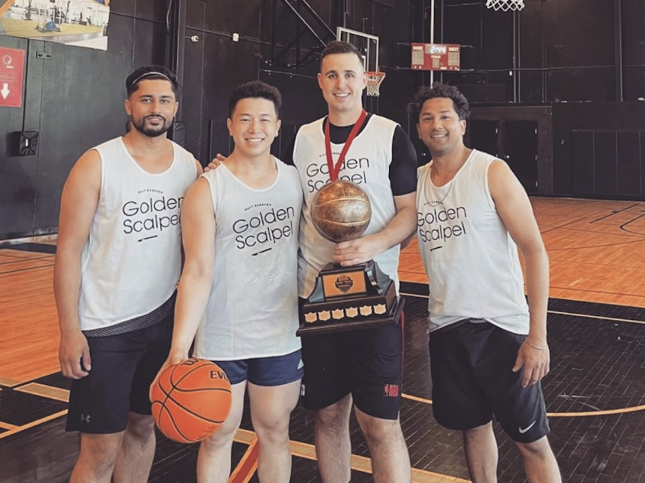
Golden Scalpel Department of Surgery Basketball Tournament Champions
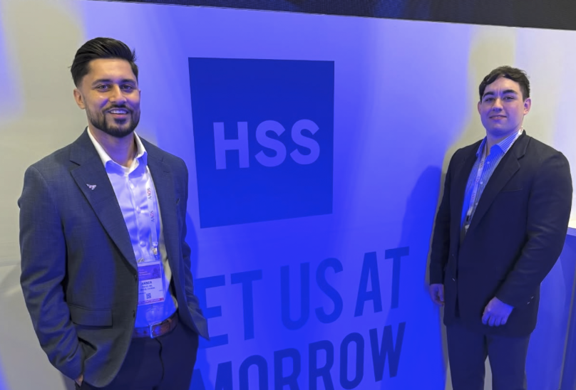
Fellowship Matched to HSS with Dr. Michael Mercier who will be pursuing Foot & Ankle Surgery.
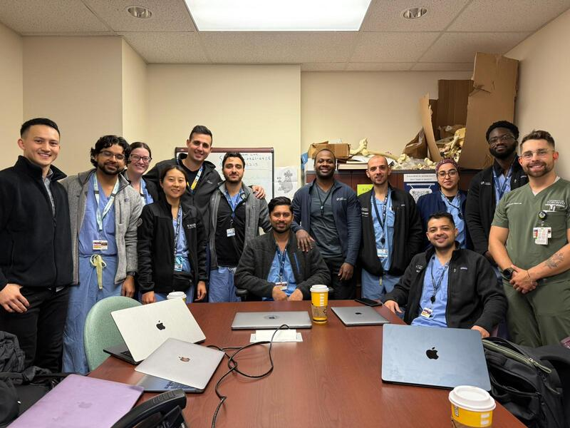
Chief Resident, Sunnybrook Health Sciences Centre
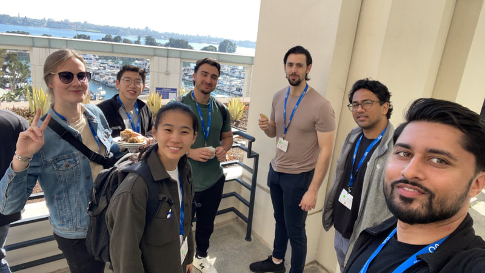
AOBasic Course in San Diego
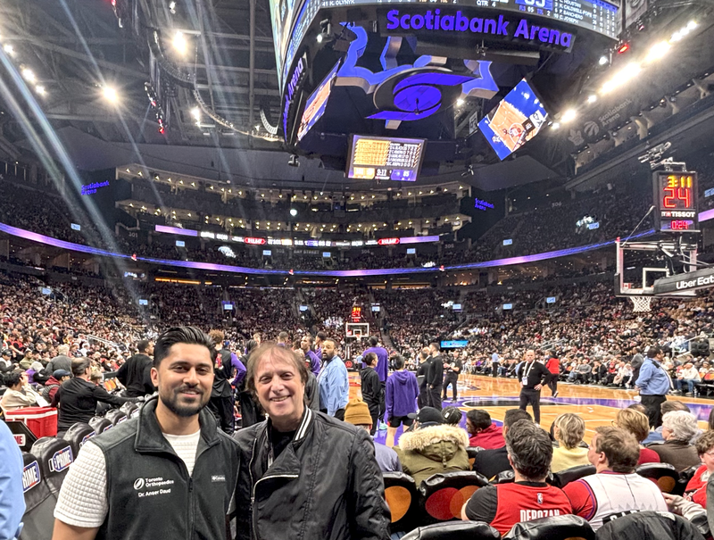
Toronto Raptors game with Dr. Paul Marks, also known as Raps Doc
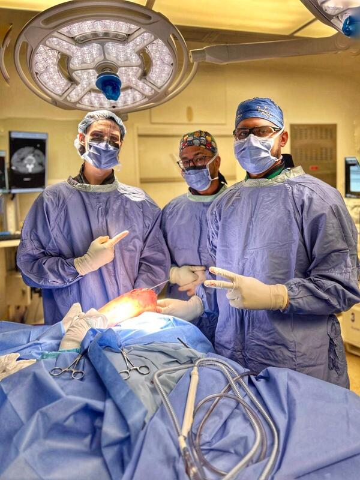
Operating at St. Michael's Hospital, Toronto's Level I Trauma Centre
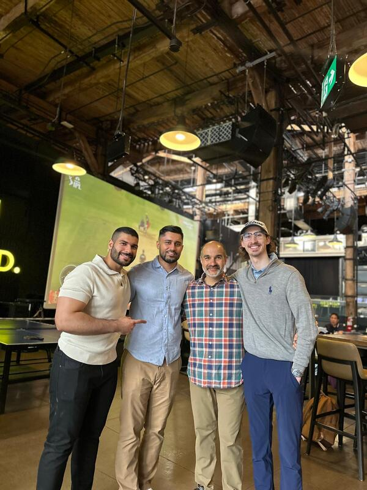
Dr. Mansur Halai at the St. Michael's Hospital Holiday Party
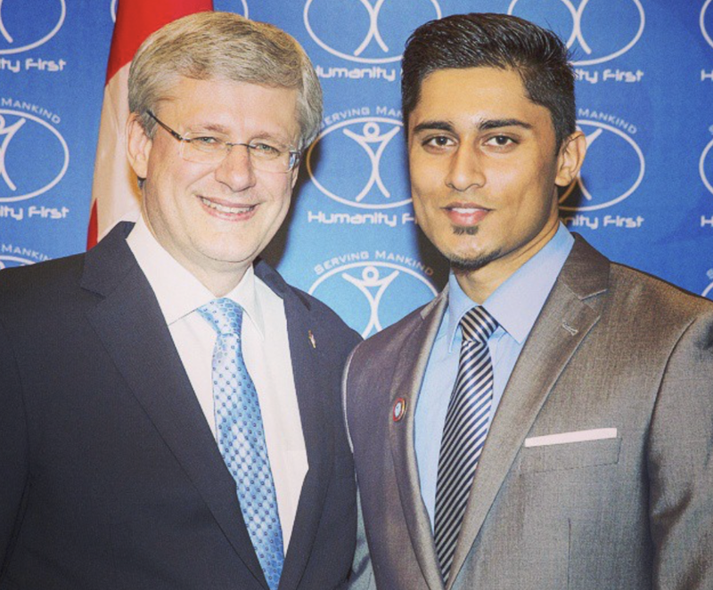
Meeting then Prime Minister Stephen Harper at Humanity First Canada's volunteer recognition event.“Better is possible. It does not take genius. It takes diligence. It takes moral clarity. It takes ingenuity. And above all, it takes a willingness to try.” Gawande